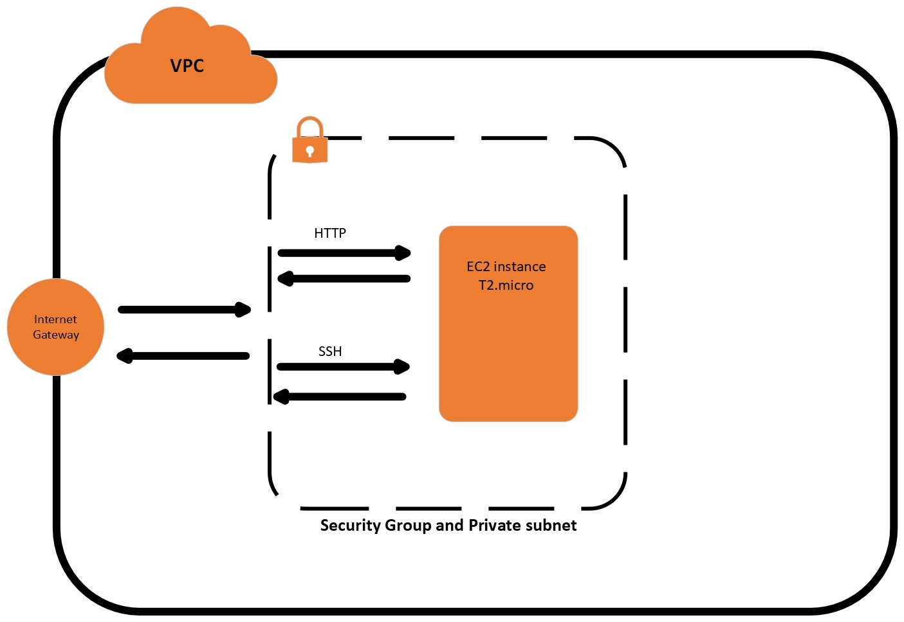

How is this website ran?
This website was built using an HTML template provided by Massively. The back end is supported by AWS. All AWS resource were provisioned via Terraform, a leading IAC language (infrastructure
as code). This server is running on a t2.micro EC2 instance that is isolated within a VPC (virtual
private cloud).This VPC allows outside users such as yourself access to this website via a internet
gateway. For security this internet gateway also has Security groups or Access control Groups if you
prefer tradional networking terms. These Security groups allow the provisioner to specify ports,
protocols, and IP ranges for both ingress and egress traffic. Within the default VPC a Subnet is
created that will allow me to assign an IP address to the EC2 instance. Doing this is very important
as it allows for internal routing. Becuase this subnet is using what is called private IP address's
which are not supposed to route in anything but an internal network, I also provisioned a NAT gateway.
In doing this all information that is sent out of my VPC will be given a public IP address, allowing
for Wide area network routing. While this configuration is very basic at the moment I plan to add more
and update this website with more information
